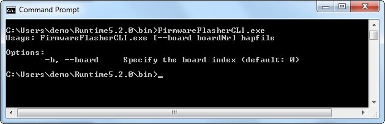

FirmwareFlasherCLI
Our Service Tool for microEnable IV
Flashing the frame grabber board - only needed for firmware updates
Basically the firmware update function is integrated in microDiagnostics. Silicon Software provides additionally a command-line tool that can be used for writing a firmware without displaying any user interface. The utility "FirmwareFlasherCLI.exe" can be found in the folder [INSTALLDIR]\Runtime5.2.0\bin.
The FirmwareFlasherCLI allows to write a *.hap file (Firmware) into the flash memory of a specific board. Please note that the flashing feature is needed for firmware updates only.
Within the folder [INSTALLDIR]\Runtime5.2.0\firmware are subdirectories with specific firmware files for each target frame grabber.

Invoking the utility FirmwareFlasherCLI
You can start the utility by entering the program name "FirmwareFlasherCLI.exe".
Without any options the help information is displayed (see screen-shot above)
Usage:
FirmwareFlasherCLI.exe [--board boardNr] hapfileOptions
- b / --board : specify the board index (default: 0)Please note, that you have to shut down and power-cycle your PC after flashing the board! It is not enough to just reboot!
| Back | Back to Documentation Index |